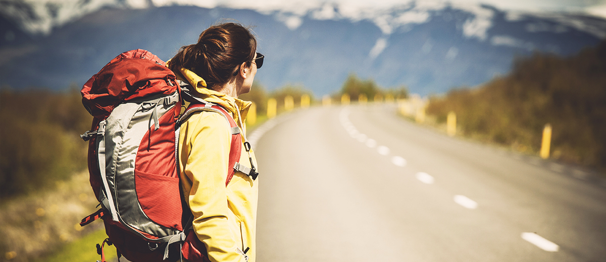

“Wander With Purpose: Exploring the World One Step at a Time”
Travel is more than ticking destinations off a list—it's about the stories you collect, the people you meet, and the perspective you gain. Whether it's the serenity of mountain trails, the chaos of street markets, or the calm of a coastal sunset, every journey leaves a mark. This blog is your companion in discovering hidden gems, cultural treasures, and unforgettable experiences. Let's wander not to escape life, but so life doesn't escape us.
1. The Beauty of Exploring New Places
Travel opens your eyes to breathtaking landscapes, diverse cultures, and unexpected experiences. Every new place has a story waiting to be discovered.
2. Budget Travel is Possible
You don't need to be rich to see the world. With a little planning, budget stays, local food, and smart transport choices, you can travel affordably.
3. Nature's Wonders Are Everywhere
Whether it's a hidden waterfall, a desert sunset, or a peaceful forest trail, nature offers some of the most unforgettable travel moments.
4. Travel Builds Human Connection
From fellow travelers to locals who welcome you with a smile, the connections you make on the road can be the most lasting part of your journey.
5. Adventure Begins Where Comfort Ends
The real magic of travel begins when you step out of your comfort zone. Whether it's hiking a mountain or trying unfamiliar food, growth happens here.
Comments